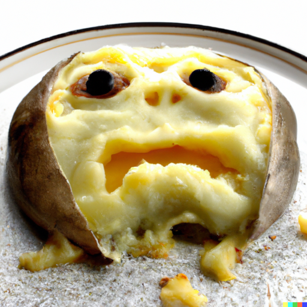

Potatoes du Chez

What's this all about?
These potatoes will have you howling. How can a dirt fruit taste so good?. Is it safe to eat these?
Look at that little guy. He doesn't understand why you are doing to this him. He is delicious. He will find out.
They'll all find out.
How we do this
Prep time: How fast can you peel garlic?
Cook time: 75 minutes
- 9 medium russet potatoes
- 1.5 bulbs of garlic, minced
- 2 tsp salt
- 3/4 tsp ground black pepper
- 3/4 tsp red pepper powder
- 1 C heavy cream
- 2 C whole milk
- 8 oz shredded cheddar
- 8 oz shredded italian
- 6 oz shredded parm
- Preheat oven to 375°F.
- In a medium bowl whisk together salt, pepper, red pepper and minced garlic with the milk and cream, set aside.
- Carefully peel and slice potatoes into 1/8-inch discs.
- Layer potatoes in large baking dish separated by cheese. Repeat layers until all potatoes and cheese have been used.
- Top off with heavy cream mixture. Spread minced garlic around if it clumps.
- Cover with foil and bake 40 minutes
- Uncover and bake 35 more minutes